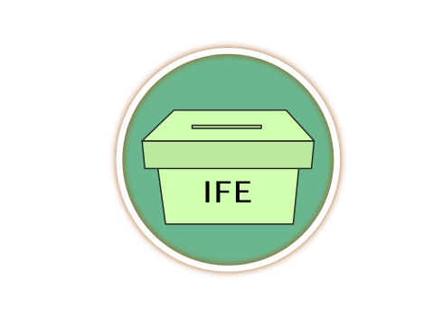

Siguiente
¿Quienes fueron los principales muralistas de la época?
{{i.t}}
¿Cuál fue la causa por la que Lázaro Cárdenas decidió expropiar el petróleo?
{{i.t}}
¿Qué frase expresa la importancia del voto femenino a nivel federal en 1953?
{{i.t}}
¿En que año se creó el Instituto Federal Electoral?
{{i.t}}
¿Qué movimiento se originó en el estado de Chiapas en 1994 y exigía al gobierno el reconocimiento y respeto a los derechos de los indígenas?
{{i.t}}
¿Qué candidato del PRI a la presidencia fue asesinado en Tijuana en el año de 1994?
{{i.t}}